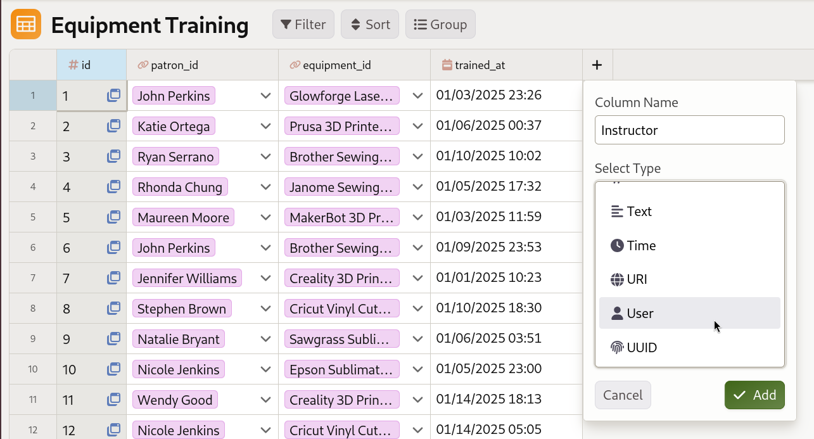
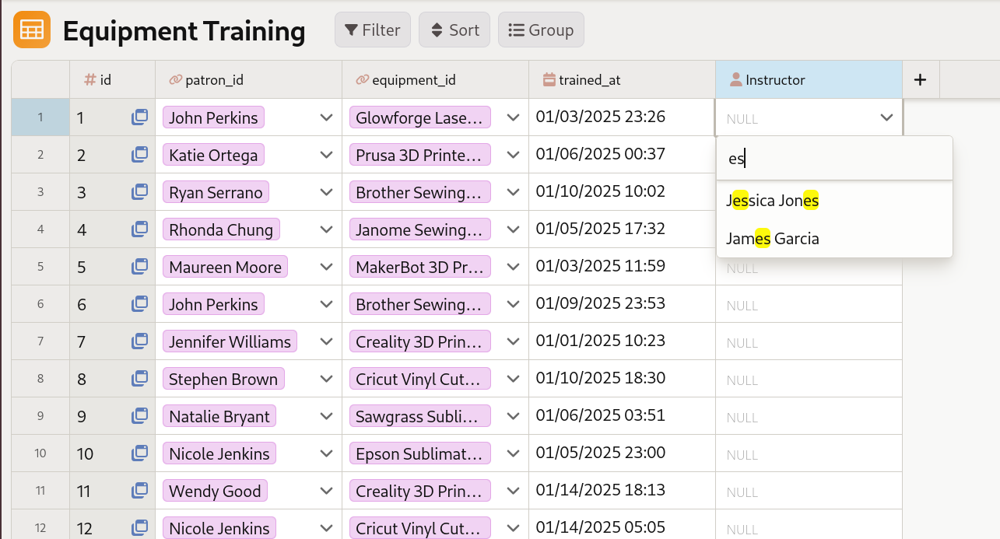
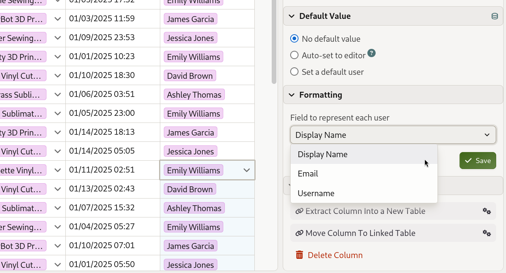

Working with the user data type¶
Mathesar’s user data type allows you to store references to Mathesar users directly in your database tables. This makes it easy to track who created records, who is assigned to tasks, or who last edited a record.
- User columns store Mathesar user IDs (integer values).
- Users are displayed using their username, display name, or email address (configurable).
- You can select users from a searchable list when editing cells.
- User columns support default values.
- A table can designate one user column to automatically record who last edited each record.
Adding user columns¶

A library administrator adding an “Instructor” column to track which staff member conducted each training session.
Adding a user column works just like adding any other column type in Mathesar:
- Open the table where you want to add a user column.
- Click the “+” icon Add Column.
- Choose User as the column type and name the column.
- Save your changes.
Once the user column is created, you’ll be able to select a user for each cell directly from the Mathesar UI.
Selecting users¶
To select a user for a user cell, click on the cell and use the user selection dialog:

Clicking on a user cell opens a searchable dropdown list of all Mathesar users.
- Click on an empty user cell (or double-click a cell with an existing value).
- A searchable list of Mathesar users will appear.
- Type to search for users by their username, display name, or email.
- Click on a user to select them.
You can also clear a user value by selecting the cell and removing the selection.
Configuring display options¶
User columns can display users using different fields. You can configure which field to use in the column inspector:

In the column inspector, you can choose whether to display users by their username, display name, or email address.
- Open the table containing the user column.
- Click on the column header to open the column inspector.
- In the Display Options section, find Field to represent each user.
- Choose from:
- Username - The user’s login username (default)
- Display Name - The user’s full name
- Email - The user’s email address
The selected display field will be used throughout Mathesar when showing this column’s values.
Setting default values¶
User columns support two default value options, which you can configure in the column inspector’s Default Value section: no default, or a specific default user.
No default¶
The column has no default value. Users must manually select a value for each record.
Set a default user¶
Sets a specific user as the default value for new records. When you create a new record, this column will automatically be populated with the selected user.
To set a default user:
- Open the column inspector for the user column.
- In the Default Value section, select Set a default user.
- Choose the user from the user selection dialog.
- Save your changes.
Tracking who edits records¶
Each table can designate one user-type column to automatically track who last edited each record. This is configured at the table level rather than on the column itself.
To enable tracking:
- Open the table you want to track edits for.
- Open the Table Inspector and locate the User tracking section.
- Select a user column from the dropdown. Choose None to disable tracking.
Once set, Mathesar updates the chosen column to the current user on every add or edit — including edits made through form submissions. The tracked column is not manually editable in the UI.
Only one user column per table can be designated for tracking at a time. Any user-type column in the table is eligible.
Tracking applies to edits made through Mathesar
The value is updated when records are modified through Mathesar (including forms). Direct database writes that bypass Mathesar will not trigger the update.
Limitations¶
User columns cannot be used in forms¶
User type columns cannot be added to forms because they require authentication to access the list of Mathesar users. Forms can be submitted anonymously, and user fields would not function correctly in that context.
Forms restriction
If you try to add a user column to a form, you’ll see an error message. User columns are automatically excluded from form field options.
Note that if a table has a tracked user column (see Tracking who edits records), that column will still be automatically populated when form submissions are processed, even though the field cannot be included in the form itself.
Use cases¶
User columns are useful for:
- Tracking ownership: Record who created or owns a record (e.g., “Created By”, “Assigned To”).
- Audit trails: Track who last modified a record by designating a user column in the table’s User tracking setting.
- Task assignment: Assign tasks or items to specific users.
- Approval workflows: Track who approved or reviewed records.
For example, in a Projects table, you might have:
- an Assigned To column set to a project manager’s Mathesar user by default
- a Last Modified By column designated as the table’s tracked user column to record recent changes